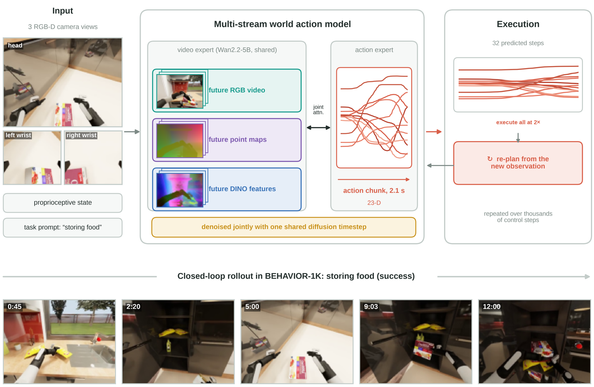
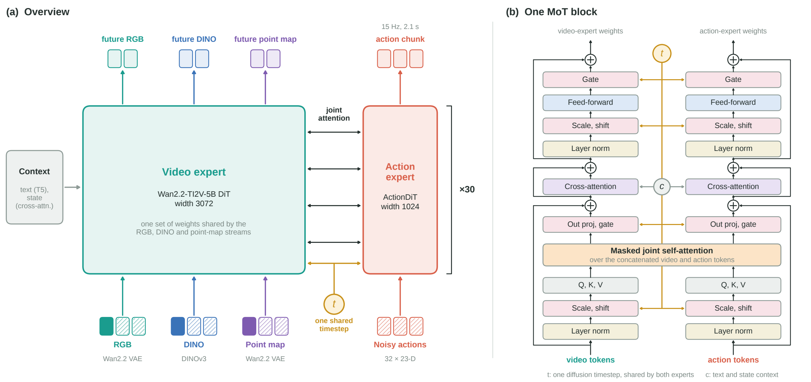
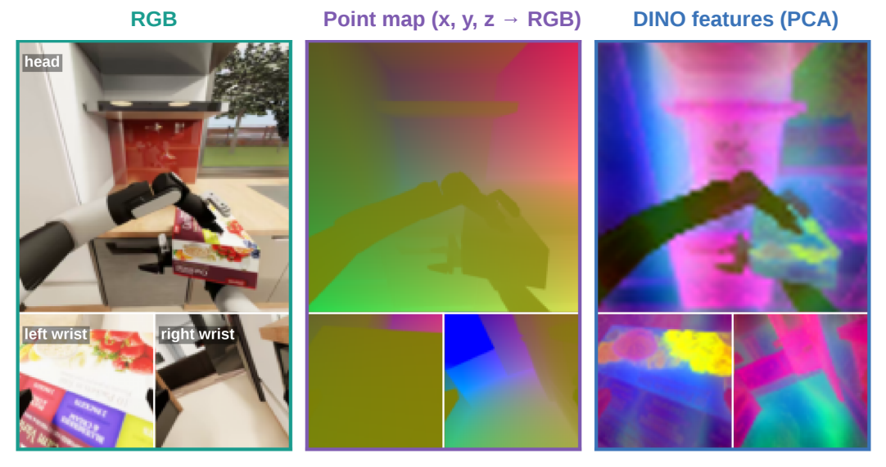
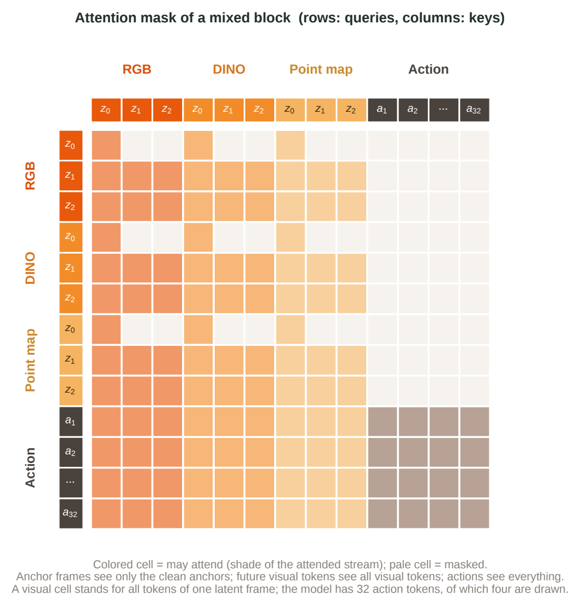
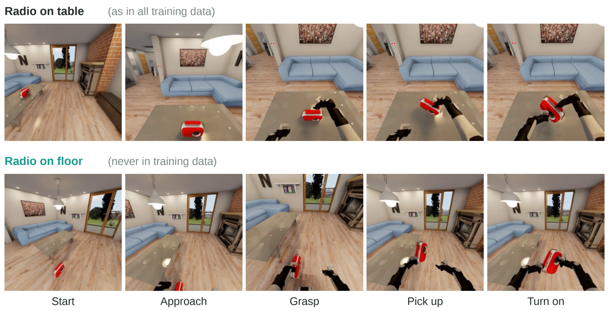

One video diffusion backbone predicts the future RGB video, DINO features and point maps of the scene together with the robot's actions.

World action models (WAMs) predict future observations together with actions on top of a pretrained video diffusion backbone. They inherit the temporal and physical priors of large-scale video pretraining and receive dense visual supervision beyond sparse action labels, which makes them an appealing basis for long-horizon manipulation. We build our solution to the BEHAVIOR-1K 2026 challenge, 100 long-horizon household tasks for a bimanual mobile manipulator, on this idea.
Our main model is a multi-stream WAM based on Wan2.2-TI2V-5B that jointly denoises RGB video, DINO features, point maps and robot actions, conditioned on three camera views, proprioception and a task prompt. Building a good WAM on top of a pretrained video model is not straightforward: the training and inference settings, and the values chosen for them, have a marked effect on the final score. Through extensive experiments we arrive at a training recipe and an inference procedure that together raise the score from 0.246 for the baseline to 0.606 Q on the full 1000-rollout evaluation, close to a 2.5-fold improvement.
Four changes on the model, the training and the deployment.
One video expert, shared by the RGB, DINO and point-map streams, predicts the future of all three together with the action chunk.
All streams use the same diffusion timestep, so training samples lie on the path that inference follows.
The proprioceptive state is zeroed on 10% of the samples, so the policy relies on what it sees and not on the state alone.
Predicted actions are played back at twice the demonstrated speed, and the whole 32-step chunk runs before the next plan.
A video expert for the scene and a narrower action expert, tied together by joint attention and one diffusion timestep.

RGB, DINO and point-map tokens, each a clean anchor plus noised future latents, enter a video expert whose weights are shared by the three streams. The point map gives the geometry of the scene as camera-frame coordinates, and the DINOv3 features give its semantics.

Anchor tokens attend only to the clean anchors of the visual streams, future visual tokens attend to all visual tokens, and action tokens attend to everything.

At inference every stream starts from noise and advances on the same step index, so sampling only walks the diagonal. With one independent timestep per stream, almost all training samples lie far from that diagonal, and the fraction shrinks as streams are added: from 19% with two streams to 0.37% with four. We therefore draw a single timestep per sample and apply it to all streams. We also drop the proprioceptive state on a fraction of the samples so that the policy relies less on it.
Each dot is one training sample, placed at the timesteps of its streams (0 = clean, 1 = pure noise). The orange ball is inference: all streams move from noise to clean together, along the diagonal. The model has four streams, so the real space has four dimensions and only 0.37% of independent samples land near the diagonal; the cube shows three of them (RGB, DINO, action), where it is 2.8%.
On the 1000 public test rollouts (100 tasks × 10 instances), changing one thing at a time: the model, the playback speed and execution horizon, and the training settings.
| Step | Model | Speed, Exec. | Q | Succ. |
|---|---|---|---|---|
| 1 Baseline | RGB only | 1×, 16 | 0.246 | 77 |
| 2 + faster execution | same checkpoint as 1 | 2×, 16 | 0.279 | 124 |
| 3 + multi-stream | CYBERWAM, no settings | 1×, 16 | 0.331 | 144 |
| 4 + faster execution | same checkpoint as 3 | 2×, 32 | 0.456 | 258 |
| 5 + training settings | CYBERWAM, with settings | 2×, 32 | 0.606 | 412 |
Speed: playback speed relative to the demonstrations. Exec.: execution horizon. Succ.: successful episodes out of 1000. Settings: shared diffusion timestep and state dropout. The gain over a bar is that of the change named under it, with respect to the row it is compared with.
In turning on radio, the radio is on the table in all training data. We moved it to the floor.

Ten tasks, head camera. For each task we show the fastest fully successful episode (Q = 1) of the model, played in full at 10 times real speed.
Pick a task, pause, or click the bar to jump. The clock is simulated time since the start of the episode.
@techreport{li2026cyberwam,
title = {Xiaomi CYBERWAM: Multi-Stream World Action Model for the BEHAVIOR-1K 2026 Challenge},
author = {{Team Cyber}},
year = {2026}
}We thank the organizers of the BEHAVIOR-1K 2026 challenge for the benchmark, the demonstrations and the evaluation infrastructure, and the authors of Fast-WAM, Flex-π, Wan2.2 and DINOv3 for releasing their code and models.